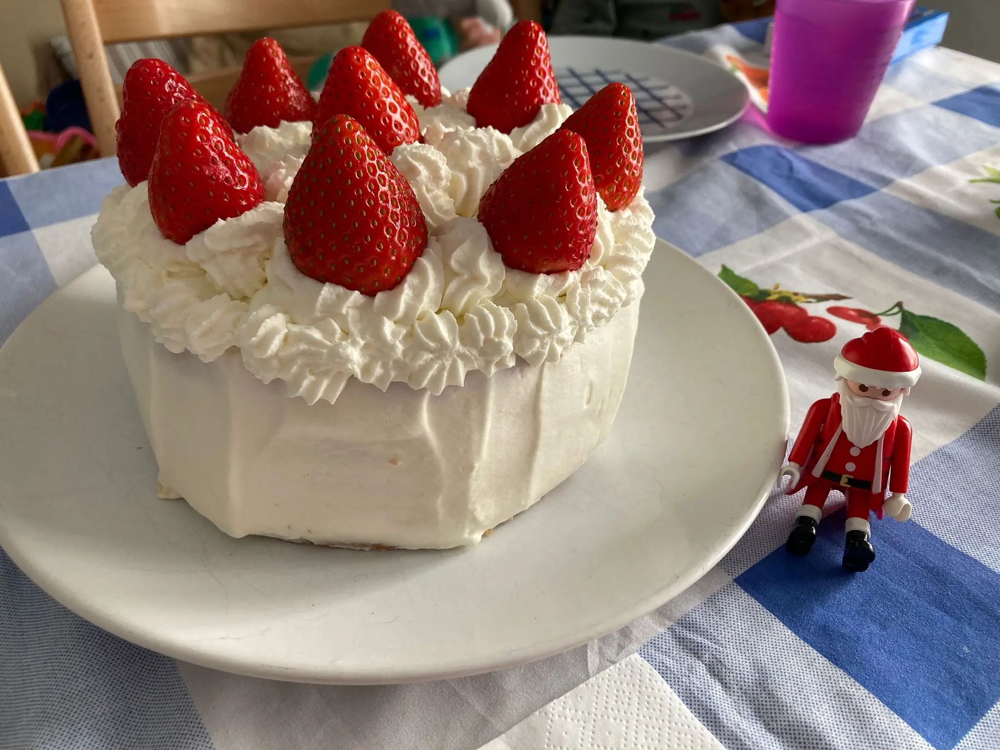
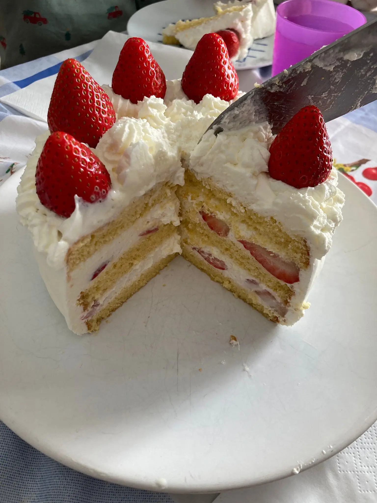
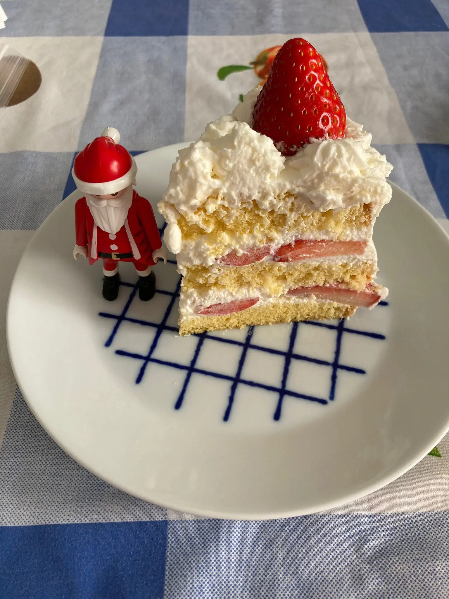

クリスマスケーキ

メリークリスマス！
私の家では、毎年、日本のクリスマスケーキを作ります。
私の家のクリスマスケーキはショートケーキです。ショートケーキはとても有名ないちごと 生クリームのケーキです。 日本では、お店で買いますが、スペインでは買えませんから、家で作ります。
ショートケーキのスポンジの材料はたまごと砂糖と小麦粉とバターと牛乳です。卵と砂糖を合わせて泡だて器でいっぱいいっぱいいっぱい泡立てて、そして小麦粉、そのあとバターと牛乳をいれて、オーブンで焼きます。
スポンジが焼けたあと、半分に切って、あいだに生クリームとイチゴをいれます。最後に生クリームとイチゴでケーキをかざります。
スポンジをきれいに作るのはむずかしいですが、とてもおいしい日本の味です。
こんど家に食べにきませんか？

